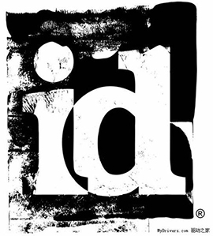
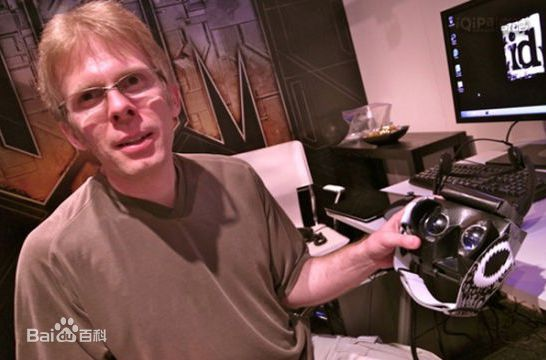

约翰·卡马克
John Carmack
约翰·卡马克（John D. Carmack II，1970年8月20日－），是美国的电玩游戏程序员、id Software的创始人之一。[1] 卡马克是一个众人皆知的开源软件的倡导者，他也再三强调反对“软件专利”，但是他一直处于势单力孤的状态。
卡马克在慈善事业方面的贡献以及对游戏社区的关心也同样出名。一个以卡马克名字命名的基金用来资助他的母校（高中）、开源软件的倡导者、游戏专利的反对者和热心的玩家。1997年，他把他的一辆法拉利跑车作为奖品，送给了一次雷神之锤比赛“赤色全歼(Red Annihilation)”的胜利者——丹尼斯·方(Dennis Fong)。
1999年，卡马克登上了美国时代杂志评选出来的科技领域50大影响力人物榜单，并且名列第10位。 2001年4月22日，卡马克成为第四位进入互动艺术和科学学院名人堂的人物，以表彰他在电子游戏和电视游戏领域所作出的杰出贡献。第一个拥有这个荣誉的人是任天堂公司的日本人宫本茂（Shigeru Miyamoto）。
人物生平
成长环境
小名约迪。他父母工作都很勤奋，所以他们家境很好。还晋升为一家电视台的晚间新闻主播，这家电视台是密苏里州堪萨斯城最大的三家电视台之一，他们随后搬迁到了郊外的富人区。在那里，约翰有了个小弟弟，彼得。同年，约翰进了圣母玛利亚天主教小学，这是当地最好的学校之一。这个从一岁起就戴上眼镜，长着一头凌乱金发的瘦小男孩在学校里很快就显示出了与众不同。二年级的时候，只有七岁的他几乎在所有标准化测验里都得到了满分，这相当于九年级的水平。约翰还养成了一种很独特的口吃习惯：在每句话后面加上简短的类似机器人那样的嗡嗡声，就像一台计算机在处理数据一样：“12乘以12等于144……嗯嗯。”卡马克的父母在他十二岁的时候突然离婚了，他们在如何抚养孩子的事情上还闹的很紧张。茵戈觉得这给卡马克造成了无法弥补的创伤。就当卡马克开始在学校里找到点乐趣的时候，他和弟弟彼得又不得不在双亲之间来回轮换，不停地转学。卡马克不喜欢和父亲分开，更糟糕的是，当他和母亲住在一起的时候，他得自己照顾自己。
初露锋芒
尚在就读高中时，卡马克就被认为是“怪才”，他还因此被学校视为有心理问题，并停课一年。复课后，卡马克还是拿到了毕业证书，并考入了当地著名的Kansas大学。在编程方面，卡马克几乎是无师自通。大一还没读完，他编写的一些小游戏就被不少软件公司买走，他本人也成为了几家软件公司的兼职程序员，并逐渐在游戏软件领域小有名气。
奋斗经历

1990年，正值计算机技术的黄金发展时期，IBM个人电脑为整个软件业带来了前所未有的机遇。但这时的软件多以商业用途为目的，游戏软件却少人问津。当时一家名为Softdisk的软件公司找到了在读大二的卡马克，希望他加入公司，一起开发游戏软件。出于对游戏软件的热爱，他毫不犹豫的同意了对方的邀请。卡马克首先遇到的问题是如何将游戏程序移植到个人电脑上，经过一番考虑，他选择了IBM PC作为最早的游戏运行平台，游戏软件就是任天堂公司风靡全球的《超级马里奥兄弟3》。经过实验，他开发出了一种名为EGA(增强型图形适配器，3D图形加速卡的雏形)的PC显示技术，这是一种16色的显示模式。之后，他又设计出屏幕刷新技术以提高游戏图形显示的速度。不久，IBM PC的第一款2D游戏成功问世，迈出了游戏软件历史性的一步。一年后，他决定自己创业，与他人共同创办了ID Software游戏公司。在id Software公司里，卡马克和他的同事通过一部又一部血腥暴力的作品创造并不断革新着这一游戏类别。id所获得的无数荣誉应当归属于它的全体员工，而约翰·卡马克无疑是将整个公司凝聚在一起的粘合剂。
雄心勃勃的卡马克当然不会停留在人人都能设计的2D游戏上，他把目标锁定在了3D游戏的研发上。如果是在几年前，他的“3D计划”可能很难实现，好在那时的计算机硬件技术已发展到了相当的水平—高分辨率显示器、大容量硬盘和内存、高速运算的CPU和图形加速卡等等，这些都是他实现梦想的绝好基础。两年后，他与另一个游戏软件天才John Romero共同开发出了全球首款3D射击游戏《德军总部3D》，这款3D游戏采用了他独创的3D游戏引擎。紧接着，他又开发出了《Doom》和《Quake》两款3D游戏。一时间，所有的电脑用户都争相购买这些游戏，人们甚至为了能玩上3D游戏而去购买昂贵的PC。不到一年的时间，仅《Doom》一款游戏就售出了几百万张拷贝，带来了上亿美元的商业利润。
目前工作
id Software的联合创始人约翰·卡马克(John Carmack)已经正式加入Oculus Rift团队，并且担任首席技术官一职。这位游戏界先锋人物将在Oculus Rift公司位于德州达拉斯的新办公室上班。在一篇新闻稿中，卡马克表示，虚拟现实的梦想已经在幕后憋了几十年，但现在，人与技术终于走到了一起，使其能够触碰到很多潜在的想象。卡马克对此感到非常兴奋，并认为这是技术变革的一个标记。Bethesda的一名发言人对Gamasutra说到，卡马克一直对Oculus VR很感兴趣，并希望在该项目上投入时间。此外，他在id Software提供游戏发展的领导与此并无影响。但与此同时，Oculus公司的发言人也指出，卡马克将是Oculus VR的一名全职员工。
卡马克与Oculus Rift的交集至少有一年了。在2012年6月的一次采访中，它就表示过自己正在努力打造一个虚拟现实头戴式装置，并且在去年的E3大展上花了大把时间来演示《毁灭战士3》(Doom 3 BFG Edition)。该项目最终在Kickstarter上筹集到了250万美元的资金。

最后，该公司计划为市场带来目标价为300美元的Oculus Rift，不过尚未设定确切的商用发布日期。
卡马克加盟Oculus Rift（虚拟现实设备制造公司）则使这种若即若离的关系更加脆弱。大神发推称："我本想保留一个id技术顾问的头衔，但于事无补。这样也许对双方都好，专注于两条战线是很难办到的。"[2]
坦白地说，卡马克主要是一名技术天才，id公司出品的每一款游戏都是围绕他所编写的引擎制作而成的，卡马克不断把引擎技术推向新的高度。他为游戏业作出的第一个贡献是实现了卷轴游戏背景图像的流畅性，这一技术在1990年的《指挥官基恩》（Commander Keen）中得到了应用，此前电脑平台上的横向卷轴游戏的背景图像都很不稳定，根本无法同当时游戏机平台上的横向卷轴游戏相比。尽管这一技术在今天看来算不上什么，但它足以显示出卡马克高超的编程能力。
成就地位
卡马克今天的地位主要归功于他在3D方面的成就，尤其是对3D加速技术不遗余力的倡导和传播。《雷神之锤》刚刚问世的时候，3D加速卡在人们眼里还只是一个可笑的空想而已，只有卡马克对3D技术的威力深信不疑，他为《雷神之锤》制作了一个专门在Verite显卡上运行的特别版本，画面看上去非常漂亮，可惜的是Verite显卡未能在市场上站稳脚跟。随后卡马克又采用OpenGL标准为《雷神之锤》制作了一个新的版本，使所有具备3D加速能力的显卡都能以更快的速度、更高的分辨率渲染出更华丽的图像。到了今天，一些显卡生产商在研发新产品之前甚至会先同卡马克商量一下，以确保他们的硬件可以完美地支持id出品的游戏。卡马克所作的这一切决定性地改变了显卡产业未来的发展。
除了3D方面的成就外，约翰·卡马克还为游戏业带来了许多其它的技术革新，例如网络代码中的客户端侦测、多重纹理、便于修改和可扩展的游戏代码、游戏内部的命令行指令……看来所有该做的都已经被卡马克做完了，可谁知道呢，也许这一切只不过是开始而已。
主要成就
卡马克在1995年放出了德军总部3D的源代码，之后的1997年又放出了毁灭战士的代码。1996年时候，他放出了雷神之锤的源代码，Quake社区中的一名不太出名的程序员将其改写成了Linux版本，并且将修改后的游戏发给了卡马克。卡马克没有认为这是侵权行为然后付诸法律，而是要求id Software的员工们用这个版本作为雷神之锤linux版本的基础。id Software在后来的日子里也同样公布了雷神之锤II的代码，雷神之锤III的代码也于2005年8月19日公布，这些代码的公布全遵循了GPL准则。毁灭战士的代码也使用GPL准则在1999年重新公布。
开发游戏
“Wolfenstein3D”（德军总部3D）
“Doom”（毁灭战士）
“DoomII”（毁灭战士2）
“Heretic”（异教徒）
“Hexen”（巫术）
“HexenII”（巫术2）
“Quake”（雷神之锤）
“QuakeII”（雷神之锤2）
“QuakeIIIArena”（雷神之锤3之雷神竞技场）
“DoomIII”（毁灭战士3）
“QuakeIV ”(雷神之锤4)
“Rage”（狂怒）